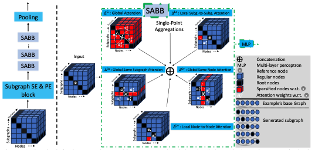

Guy Bar-Shalom
Hi! I am a Ph.D. Student in the Computer Science Department at the Technion under the joint supervision of Haggai Maron and Ran El-Yaniv . My research focuses on deep learning, with a specific interest in Graph Neural Networks and uncertainty estimation.
Previously (Summer 2022), I was a Research Scientist Intern at Google-Verily working with Michael Elad on video analysis.

Selected Publications
* indicates equal contribution

Subgraphormer: Unifying Subgraph GNNs and Graph Transformers via Graph Products
Guy Bar-Shalom, Beatrice Bevilacqua, Haggai Maron
International Conference on Machine Learning, (ICML), 2024
Poster / Short talk / Slides
Guy Bar-Shalom, Beatrice Bevilacqua, Haggai Maron
International Conference on Machine Learning, (ICML), 2024
Poster / Short talk / Slides

Subgraphormer: Subgraph GNNs meet Graph Transformers
Guy Bar-Shalom, Beatrice Bevilacqua, Haggai Maron
NeurIPS 2023 Workshop: New Frontiers in Graph Learning, 2023
Poster
Guy Bar-Shalom, Beatrice Bevilacqua, Haggai Maron
NeurIPS 2023 Workshop: New Frontiers in Graph Learning, 2023
Poster

Weakly-supervised Representation Learning for Video Alignment and Analysis
Guy Bar-Shalom, George Leifman, Michael Elad
IEEE/CVF Winter Conference on Applications of Computer Vision (WACV), 2024
Poster / Short talk
Guy Bar-Shalom, George Leifman, Michael Elad
IEEE/CVF Winter Conference on Applications of Computer Vision (WACV), 2024
Poster / Short talk

Window-Based Distribution Shift Detection for Deep Neural Networks
Guy Bar-Shalom, Yonatan Geifman, Ran El-Yaniv
Advances in Neural Information Processing Systems (NeurIPS), 2023
Poster / Code / Short talk
Guy Bar-Shalom, Yonatan Geifman, Ran El-Yaniv
Advances in Neural Information Processing Systems (NeurIPS), 2023
Poster / Code / Short talk

TransBoost: Improving the Best ImageNet Performance using Deep Transduction
Omer Belhasin*, Guy Bar-Shalom*, Ran El-Yaniv
Advances in Neural Information Processing Systems (NeurIPS), 2022
Poster / Code / Short talk
Omer Belhasin*, Guy Bar-Shalom*, Ran El-Yaniv
Advances in Neural Information Processing Systems (NeurIPS), 2022
Poster / Code / Short talk
Based on Michael Niemeyer's website template.